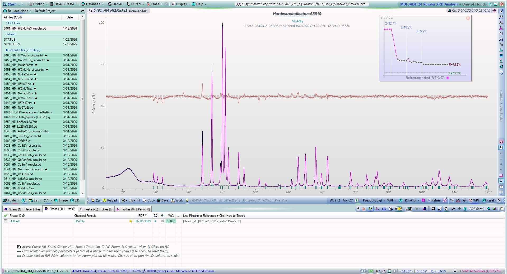

| Element | Expected (mol frac) | Measured (mol frac) | Δ (mol frac) | Δ (%) |
|---|---|---|---|---|
| Hf | 0.3333 | 0.3341 | +0.0007 | +0.07% |
| Mo | 0.1667 | 0.1659 | -0.0007 | -0.07% |
| Re | 0.5000 | 0.5000 | +0.0000 | +0.00% |
207 entries in the Hf-Mo-Re element system (9 on hull, 29 ICSD-tagged). Stability in meV/atom. Sorted most stable first.
| Composition | Stability (meV/atom) | ΔE (meV/atom) | ICSD | Space | Entry | CIF |
|---|---|---|---|---|---|---|
Hf1Re2 |
-119 | -401.4 | ✓ | Hf-Re | 19312 | CIF |
Hf1Mo2 |
-105 | -170.3 | Hf-Mo | 1592121 | CIF | |
Hf5Re24 |
-52 | -259.8 | Hf-Re | 1340914 | CIF | |
Hf54Re17 |
-38 | -184.0 | Hf-Re | 2141588 | CIF | |
Mo5Re24 |
-17 | -17.4 | ✓ | Mo-Re | 19114 | CIF |
Hf4Mo5Re3 |
-1 | -258.3 | Hf-Mo-Re | 2151141 | CIF | |
Hf1 |
+0 | 0.0 | Hf | 1215332 | CIF | |
Mo1 |
+0 | 0.0 | Mo | 1215167 | CIF | |
Re1 |
+0 | 0.0 | ✓ | Re | 7248 | CIF |
Re1 |
+0 | 0.0 | ✓ | Re | 116150 | CIF |
Hf1 |
+0 | 0.1 | ✓ | Hf | 677914 | CIF |
Re1 |
+0 | 0.1 | ✓ | Re | 111079 | CIF |
Mo1 |
+0 | 0.1 | Mo | 1522085 | CIF | |
Mo1 |
+0 | 0.1 | Mo | 1522090 | CIF | |
Re1 |
+0 | 0.2 | Re | 1215364 | CIF | |
Hf1Mo2 |
+0 | -170.1 | ✓ | Hf-Mo | 17365 | CIF |
Hf5Re24 |
+0 | -259.6 | ✓ | Hf-Re | 19106 | CIF |
Hf1 |
+0 | 0.2 | ✓ | Hf | 676495 | CIF |
Mo1 |
+0 | 0.3 | ✓ | Mo | 676469 | CIF |
Hf1 |
+0 | 0.3 | ✓ | Hf | 687554 | CIF |
Hf1 |
+0 | 0.3 | ✓ | Hf | 676527 | CIF |
Re1 |
+0 | 0.4 | ✓ | Re | 2030133 | CIF |
Hf1 |
+1 | 0.5 | ✓ | Hf | 687654 | CIF |
Hf1 |
+1 | 0.6 | ✓ | Hf | 2030130 | CIF |
Re1 |
+1 | 0.7 | Re | 1215454 | CIF | |
Hf4Mo1Re7 |
+1 | -371.5 | Hf-Mo-Re | 2150123 | CIF | |
Hf4Mo3Re5 |
+2 | -313.2 | Hf-Mo-Re | 2150626 | CIF | |
Hf1 |
+2 | 2.4 | Hf | 1215243 | CIF | |
Hf1Mo1Re1 |
+3 | -283.7 | Hf-Mo-Re | 1992463 | CIF | |
Re1 |
+3 | 3.3 | Re | 1215275 | CIF | |
Hf1Mo2 |
+6 | -163.8 | ✓ | Hf-Mo | 2052714 | CIF |
Hf1Mo2 |
+7 | -163.3 | Hf-Mo | 1610025 | CIF | |
Hf1Re1 |
+11 | -305.8 | Hf-Re | 306525 | CIF | |
Hf1Re1 |
+11 | -305.7 | Hf-Re | 1522341 | CIF | |
Re1 |
+11 | 11.4 | Re | 1216080 | CIF | |
Hf1Re1 |
+19 | -297.5 | Hf-Re | 338067 | CIF | |
Hf1Mo2 |
+21 | -148.8 | Hf-Mo | 1609935 | CIF | |
Hf1Mo2 |
+21 | -148.8 | ✓ | Hf-Mo | 2033985 | CIF |
Hf1 |
+32 | 32.2 | Hf | 1216045 | CIF | |
Hf1 |
+43 | 43.1 | ✓ | Hf | 2015187 | CIF |
Mo3Re1 |
+43 | 38.0 | Mo-Re | 308709 | CIF | |
Hf1 |
+43 | 43.5 | Hf | 1801138 | CIF | |
Hf1Re2 |
+47 | -354.1 | Hf-Re | 1339040 | CIF | |
Hf1Re2 |
+48 | -353.8 | Hf-Re | 1594532 | CIF | |
Hf1Re2 |
+49 | -352.2 | Hf-Re | 1338524 | CIF | |
Re1 |
+51 | 50.6 | Re | 1577186 | CIF | |
Re1 |
+51 | 50.8 | Re | 1214830 | CIF | |
Hf1 |
+52 | 51.9 | Hf | 1215422 | CIF | |
Hf1Mo3 |
+55 | -72.9 | Hf-Mo | 1793441 | CIF | |
Re1 |
+62 | 62.0 | ✓ | Re | 7519 | CIF |
Re1 |
+62 | 62.4 | Re | 1214563 | CIF | |
Re1 |
+62 | 62.4 | Re | 1484996 | CIF | |
Re1 |
+63 | 62.6 | Re | 1215721 | CIF | |
Hf2Mo1 |
+66 | -19.1 | Hf-Mo | 1449931 | CIF | |
Re1 |
+68 | 67.7 | Re | 1214919 | CIF | |
Hf1 |
+72 | 71.7 | Hf | 1214531 | CIF | |
Hf1 |
+72 | 71.9 | ✓ | Hf | 676154 | CIF |
Hf1 |
+72 | 72.0 | Hf | 1215689 | CIF | |
Hf1Mo2Re1 |
+74 | -140.8 | Hf-Mo-Re | 1143721 | CIF | |
Hf1 |
+80 | 79.9 | Hf | 1215778 | CIF | |
Hf1 |
+83 | 83.1 | Hf | 1214620 | CIF | |
Hf2Mo1Re1 |
+84 | -147.2 | Hf-Mo-Re | 414596 | CIF | |
Re1 |
+86 | 85.6 | Re | 1214652 | CIF | |
Hf1Mo3 |
+87 | -40.4 | Hf-Mo | 310105 | CIF | |
Hf1Mo3 |
+88 | -39.8 | Hf-Mo | 2085980 | CIF | |
Hf1Mo3 |
+88 | -39.8 | Hf-Mo | 2121360 | CIF | |
Mo1Re5 |
+89 | 72.2 | Mo-Re | 1450671 | CIF | |
Hf3Mo1 |
+92 | 27.9 | Hf-Mo | 2080674 | CIF | |
Mo1 |
+95 | 94.5 | Mo | 1280332 | CIF | |
Mo1 |
+95 | 94.5 | Mo | 1214989 | CIF | |
Re1 |
+97 | 96.6 | Re | 1516156 | CIF | |
Hf1Mo1 |
+98 | -29.8 | Hf-Mo | 2080426 | CIF | |
Hf1Mo3 |
+99 | -28.7 | Hf-Mo | 2080538 | CIF | |
Hf1Mo2Re1 |
+100 | -115.2 | Hf-Mo-Re | 449129 | CIF | |
Hf1Mo3 |
+101 | -26.9 | Hf-Mo | 2082277 | CIF | |
Hf3Mo1 |
+104 | 40.6 | Hf-Mo | 2086116 | CIF | |
Mo1Re5 |
+105 | 88.5 | Mo-Re | 1450620 | CIF | |
Mo1Re5 |
+117 | 100.4 | Mo-Re | 1436196 | CIF | |
Hf1Mo1 |
+120 | -7.8 | Hf-Mo | 2082127 | CIF | |
Mo1Re1 |
+121 | 110.5 | Mo-Re | 304791 | CIF | |
Mo1 |
+124 | 123.6 | Mo | 1215880 | CIF | |
Hf1Mo1Re2 |
+125 | -175.7 | Hf-Mo-Re | 542099 | CIF | |
Hf1Mo1 |
+135 | 7.1 | Hf-Mo | 2085844 | CIF | |
Hf1Mo1 |
+138 | 10.1 | Hf-Mo | 306556 | CIF | |
Hf1 |
+139 | 138.6 | Hf | 1214887 | CIF | |
Hf1Mo1 |
+139 | 11.6 | Hf-Mo | 1435347 | CIF | |
Hf1Mo1 |
+139 | 11.6 | Hf-Mo | 1435346 | CIF | |
Mo1Re3 |
+142 | 126.4 | Mo-Re | 343737 | CIF | |
Mo1Re3 |
+146 | 130.0 | Mo-Re | 319251 | CIF | |
Mo1Re2 |
+147 | 133.4 | Mo-Re | 1436045 | CIF | |
Mo1Re3 |
+148 | 132.2 | Mo-Re | 302608 | CIF | |
Hf1Mo1 |
+151 | 23.5 | Hf-Mo | 338098 | CIF | |
Hf3Mo1 |
+155 | 90.9 | Hf-Mo | 2082427 | CIF | |
Re1 |
+168 | 168.1 | ✓ | Re | 2031505 | CIF |
Re1 |
+173 | 173.3 | Re | 1215008 | CIF | |
Hf1Mo1Re2 |
+176 | -124.8 | Hf-Mo-Re | 1144191 | CIF | |
Hf1Mo1Re2 |
+176 | -124.7 | Hf-Mo-Re | 1128395 | CIF | |
Hf1 |
+180 | 179.7 | Hf | 1215154 | CIF | |
Hf1 |
+180 | 179.7 | ✓ | Hf | 684885 | CIF |
Hf1 |
+180 | 179.8 | Hf | 1215867 | CIF | |
Hf1 |
+180 | 179.9 | Hf | 1522340 | CIF | |
Hf3Re1 |
+183 | -6.5 | Hf-Re | 312200 | CIF | |
Hf3Mo1 |
+184 | 119.9 | Hf-Mo | 312281 | CIF | |
Mo1Re2 |
+185 | 171.3 | Mo-Re | 1338739 | CIF | |
Mo1Re2 |
+185 | 171.3 | Mo-Re | 1594503 | CIF | |
Hf2Mo1Re1 |
+202 | -28.4 | Hf-Mo-Re | 1127776 | CIF | |
Hf1Mo1 |
+205 | 77.3 | Hf-Mo | 2082577 | CIF | |
Re1 |
+206 | 205.8 | Re | 1486168 | CIF | |
Hf1Mo1 |
+214 | 86.0 | Hf-Mo | 2121111 | CIF | |
Hf1Mo1 |
+214 | 86.0 | Hf-Mo | 2084787 | CIF | |
Hf1 |
+218 | 217.8 | Hf | 1214798 | CIF | |
Mo1Re3 |
+224 | 207.8 | Mo-Re | 313150 | CIF | |
Mo1Re1 |
+226 | 215.1 | Mo-Re | 325875 | CIF | |
Hf3Mo1 |
+232 | 168.1 | Hf-Mo | 320647 | CIF | |
Hf3Mo1 |
+239 | 175.4 | Hf-Mo | 301739 | CIF | |
Hf1 |
+243 | 243.4 | Hf | 1214976 | CIF | |
Hf1Mo1Re1 |
+247 | -39.5 | Hf-Mo-Re | 1523271 | CIF | |
Hf1Mo1 |
+257 | 129.6 | Hf-Mo | 2083243 | CIF | |
Mo1Re1 |
+261 | 250.0 | Mo-Re | 1230358 | CIF | |
Hf3Mo1 |
+263 | 198.8 | Hf-Mo | 345133 | CIF | |
Hf1 |
+267 | 266.9 | Hf | 1215065 | CIF | |
Mo1 |
+268 | 267.8 | Mo | 1214811 | CIF | |
Hf1Re3 |
+269 | -58.6 | Hf-Re | 308444 | CIF | |
Re1 |
+274 | 274.1 | Re | 1485406 | CIF | |
Hf3Re1 |
+275 | 85.2 | Hf-Re | 318986 | CIF | |
Hf1Re5 |
+293 | 42.3 | Hf-Re | 1450665 | CIF | |
Re1 |
+300 | 300.5 | Re | 1600529 | CIF | |
Mo1 |
+308 | 307.7 | Mo | 1214900 | CIF | |
Hf3Re1 |
+309 | 119.2 | Hf-Re | 343472 | CIF | |
Hf3Re1 |
+310 | 120.1 | Hf-Re | 301658 | CIF | |
Mo3Re1 |
+313 | 308.1 | Mo-Re | 348178 | CIF | |
Re1 |
+314 | 313.6 | ✓ | Re | 2030132 | CIF |
Re1 |
+316 | 315.5 | Re | 1522092 | CIF | |
Re1 |
+316 | 315.5 | Re | 1522095 | CIF | |
Re1 |
+316 | 315.7 | Re | 1215186 | CIF | |
Re1 |
+316 | 315.8 | Re | 1215899 | CIF | |
Mo3Re1 |
+317 | 311.3 | Mo-Re | 298176 | CIF | |
Mo1 |
+330 | 329.9 | ✓ | Mo | 2030156 | CIF |
Mo1Re1 |
+332 | 321.1 | Mo-Re | 336333 | CIF | |
Re1 |
+334 | 333.6 | Re | 1485178 | CIF | |
Mo1 |
+334 | 334.1 | Mo | 1215702 | CIF | |
Hf1Mo3 |
+336 | 208.4 | Hf-Mo | 299563 | CIF | |
Hf1Mo1Re1 |
+337 | 49.6 | Hf-Mo-Re | 1523557 | CIF | |
Hf1Mo5 |
+351 | 265.9 | Hf-Mo | 1435734 | CIF | |
Hf1Mo5 |
+351 | 265.9 | Hf-Mo | 1472011 | CIF | |
Mo3Re1 |
+360 | 354.3 | Mo-Re | 323692 | CIF | |
Mo1 |
+362 | 362.4 | Mo | 1215256 | CIF | |
Mo1 |
+366 | 366.0 | Mo | 1214633 | CIF | |
Hf1 |
+379 | 379.3 | Hf | 1214709 | CIF | |
Hf1Mo2 |
+405 | 234.4 | ✓ | Hf-Mo | 2033987 | CIF |
Mo1 |
+406 | 405.7 | ✓ | Mo | 2031498 | CIF |
Hf1Mo1 |
+410 | 282.6 | Hf-Mo | 327640 | CIF | |
Hf1Re5 |
+410 | 159.3 | Hf-Re | 1471995 | CIF | |
Hf1Re5 |
+410 | 159.3 | Hf-Re | 1435653 | CIF | |
Mo1 |
+416 | 415.6 | ✓ | Mo | 676152 | CIF |
Mo1 |
+416 | 416.0 | Mo | 1214544 | CIF | |
Mo1 |
+421 | 420.8 | ✓ | Mo | 2030243 | CIF |
Mo1 |
+422 | 422.1 | Mo | 1215435 | CIF | |
Re1 |
+422 | 422.4 | Re | 1215810 | CIF | |
Mo1 |
+429 | 429.0 | Mo | 1216061 | CIF | |
Mo1 |
+433 | 433.4 | ✓ | Mo | 2030388 | CIF |
Mo1 |
+434 | 434.3 | Mo | 1215345 | CIF | |
Hf1Re1 |
+434 | 117.9 | Hf-Re | 327609 | CIF | |
Mo2Re1 |
+435 | 428.0 | Mo-Re | 1592123 | CIF | |
Mo1 |
+458 | 458.0 | Mo | 1215791 | CIF | |
Hf1Mo1 |
+486 | 358.8 | Hf-Mo | 1229758 | CIF | |
Hf1Mo3 |
+493 | 365.7 | Hf-Mo | 322823 | CIF | |
Hf1Re3 |
+507 | 179.2 | Hf-Re | 297913 | CIF | |
Hf1Re3 |
+511 | 182.4 | Hf-Re | 322742 | CIF | |
Hf1Re3 |
+514 | 185.5 | Hf-Re | 347228 | CIF | |
Mo1Re5 |
+540 | 523.6 | Mo-Re | 1450621 | CIF | |
Mo1 |
+543 | 542.9 | Mo | 1215078 | CIF | |
Hf1Mo3 |
+549 | 421.5 | Hf-Mo | 347309 | CIF | |
Hf1Re1 |
+558 | 241.8 | Hf-Re | 1229776 | CIF | |
Hf1 |
+577 | 577.2 | Hf | 1277911 | CIF | |
Hf1Mo1Re1 |
+617 | 330.4 | Hf-Mo-Re | 973197 | CIF | |
Re1 |
+656 | 655.9 | Re | 1215097 | CIF | |
Hf1 |
+658 | 658.0 | Hf | 1215600 | CIF | |
Hf2Mo1 |
+712 | 626.9 | Hf-Mo | 1609944 | CIF | |
Hf2Mo1 |
+738 | 653.1 | Hf-Mo | 1610034 | CIF | |
Hf2Mo2Re1 |
+744 | 514.4 | Hf-Mo-Re | 1213518 | CIF | |
Re1 |
+757 | 757.1 | Re | 1214741 | CIF | |
Hf2Mo1Re2 |
+775 | 476.5 | Hf-Mo-Re | 1213748 | CIF | |
Hf2Mo1 |
+778 | 692.9 | Hf-Mo | 1594288 | CIF | |
Hf1Mo1Re1 |
+814 | 527.4 | Hf-Mo-Re | 883717 | CIF | |
Mo1 |
+835 | 835.0 | Mo | 1215613 | CIF | |
Mo1 |
+937 | 937.0 | Mo | 1214722 | CIF | |
Hf2Re1 |
+977 | 745.4 | Hf-Re | 1594319 | CIF | |
Re1 |
+1000 | 999.5 | Re | 1215632 | CIF | |
Hf1Mo1 |
+1074 | 946.7 | Hf-Mo | 1105741 | CIF | |
Hf1Re1 |
+1152 | 835.6 | Hf-Re | 1105710 | CIF | |
Mo1Re1 |
+1241 | 1231.0 | Mo-Re | 1103977 | CIF | |
Mo1 |
+1303 | 1302.7 | Mo | 1215969 | CIF | |
Hf1 |
+1376 | 1376.3 | Hf | 1215956 | CIF | |
Re1 |
+1388 | 1387.7 | Re | 1215988 | CIF | |
Hf1Mo1Re1 |
+1550 | 1262.9 | Hf-Mo-Re | 862029 | CIF | |
Re1 |
+1556 | 1556.1 | Re | 1215543 | CIF | |
Mo1Re1 |
+1949 | 1938.4 | Mo-Re | 1223387 | CIF | |
Mo1 |
+2237 | 2237.3 | Mo | 1215524 | CIF | |
Hf2Mo1 |
+2456 | 2371.1 | Hf-Mo | 1238828 | CIF | |
Hf1Re1 |
+2490 | 2173.7 | Hf-Re | 1222805 | CIF | |
Hf2Re1 |
+2564 | 2331.7 | Hf-Re | 1237793 | CIF | |
Hf1Mo1 |
+2581 | 2453.1 | Hf-Mo | 1222787 | CIF | |
Hf1 |
+2687 | 2687.0 | Hf | 1215511 | CIF | |
Mo2Re1 |
+3571 | 3564.5 | Mo-Re | 1240205 | CIF | |
Mo1Re2 |
+4122 | 4108.4 | Mo-Re | 1240204 | CIF | |
Hf1Re2 |
+4599 | 4197.7 | Hf-Re | 1237792 | CIF |

| Phase | Formula | Crystal System | Space Group | Lattice Parameters (Å / °) | Bragg-R |
|---|---|---|---|---|---|
| Hf4Re8 | Hf4Re8 | Triclinic | P1 (1) | a = 5.26494(89) b = 5.25835(89) c = 8.6202(11) | 7.76% |
102 known superconductor(s) in the Hf2MoRe3 element system. Sorted by Tc descending. ■ closest composition
| Compound | Formula | Tc (K) | Reference |
|---|---|---|---|
| Mo0.7Re0.3 | Mo0.7Re0.3 |
15.00 | Search |
| Mo0.57Re0.43 | Mo0.57Re0.43 |
14.00 | 10.1103/PhysRev.140.A914 |
| Mo0.57Re0.43 | Mo0.57Re0.43 |
14.00 | Search |
| Re1-xMox | Re0.4Mo0.6 |
13.00 | Search |
| (Mo,Re) | Mo0.6Re0.4 |
12.30 | 10.1103/PhysRevLett.57.2987 |
| Re1-xMox | Re0.35Mo0.65 |
12.05 | Search |
| (Mo,Re) | Mo0.6Re0.4 |
12.00 | Search |
| Mo0.66Re0.34 | Mo0.66Re0.34 |
11.80 | Search |
| Mo0.5Re0.5 | Mo0.5Re0.5 |
11.60 | Search |
| (Mo,Re) | Mo0.62Re0.38 |
11.50 | Search |
| Mo0.52Re0.48 | Mo0.52Re0.48 |
11.10 | 10.1103/PhysRev.142.251 |
| Mo0.52Re0.48 | Mo0.52Re0.48 |
11.10 | Search |
| Mo0.52Re0.48 | Mo0.52Re0.48 |
11.10 | Search |
| Mo0.6Re0.4 | Mo0.6Re0.4 |
10.60 | 10.1103/PhysRev.142.251 |
| Mo0.6Re0.395 | Mo0.6Re0.395 |
10.60 | Search |
| Mo0.5Re0.395 | Mo0.5Re0.395 |
10.60 | Search |
| (Mo,Re) | Mo0.7Re0.3 |
10.50 | Search |
| Re1-xMox | Re0.25Mo0.75 |
10.30 | Search |
| (Mo,Re) | Mo0.65Re0.35 |
10.20 | Search |
| (Mo,Re) | Mo0.75Re0.25 |
10.00 | Search |
| (Mo,Re) | Mo0.57Re0.43 |
10.00 | Search |
| Mo1-xRex | Mo0.75Re0.25 |
10.00 | 10.1103/PhysRev.123.1569 |
| Mo1Re3 | Mo1Re3 |
9.89 | Search |
| Mo3Re1 | Mo3Re1 |
9.80 | 10.1103/PhysRev.125.474 |
| Re1-xMox | Re0.77Mo0.23 |
9.43 | Search |
| Mo0.23Re0.77 | Mo0.23Re0.77 |
9.25 | Search |
| Re1-xMox | Re0.8Mo0.2 |
9.02 | Search |
| Re1-xMox | Re0.77Mo0.23 |
8.65 | Search |
| (Mo,Re) | Mo0.82Re0.18 |
8.50 | Search |
| Re1-xMox | Re0.2Mo0.8 |
8.50 | Search |
| Mo0.42Re0.58 | Mo0.42Re0.58 |
8.40 | Search |
| Mo0.42Re0.58 | Mo0.42Re0.58 |
8.40 | Search |
| Mo0.815Re0.185 | Mo0.815Re0.185 |
8.27 | Search |
| Mo1Re4 | Mo1Re4 |
7.85 | Search |
| MoxRey | Mo30Re70 |
7.62 | 10.1103/PhysRevB.13.4827 |
| Re1-xMox | Re0.88Mo0.12 |
7.45 | Search |
| Hf0.025Re0.975 | Hf0.025Re0.975 |
7.30 | Search |
| Mo3O5 | Mo3O5 |
7.20 | Search |
| Re1 | Re1 |
7.00 | 10.1103/PhysRevLett.15.260 |
| Re1-xMox | Re0.15Mo0.85 |
6.74 | Search |
| Re1-xMox | Re0.55Mo0.45 |
6.60 | Search |
| Mo0.5Re0.5 | Mo0.5Re0.5 |
6.50 | Search |
| Mo0.28Re0.72 | Mo0.28Re0.72 |
6.50 | Search |
| Mo1-x(Pt,Re)x | Mo0.5Re0.5 |
6.50 | Search |
| Mo1-xRex | Mo0.4Re0.6 |
6.49 | 10.1103/PhysRevB.3.742 |
| Mo1-xRex | Mo0.45Re0.55 |
6.47 | 10.1103/PhysRevB.3.742 |
| Mo0.42Re0.58 | Mo0.42Re0.58 |
6.35 | Search |
| Mo1-xRex | Mo0.42Re0.58 |
6.35 | 10.1103/PhysRevB.3.742 |
| Re1-xMox | Re0.65Mo0.35 |
6.30 | Search |
| Re6Hf | Hf1Re6 |
6.20 | 10.1103/PhysRevB.94.024518 |
| Mo0.865Re0.135 | Mo0.865Re0.135 |
6.10 | Search |
| Re1-xMox | Re0.6Mo0.4 |
6.07 | Search |
| (Mo,Re) | Mo0.4Re0.6 |
6.00 | Search |
| Re6Hf | Hf1Re6 |
5.94 | 10.1103/PhysRevB.94.054515 |
| Mo1-xRex | Mo0.45Re0.55 |
5.90 | 10.1103/PhysRevB.3.742 |
| Mo1-xRex | Mo0.33Re0.67 |
5.89 | 10.1103/PhysRev.123.1569 |
| Hf0.14Re0.86 | Hf0.14Re0.86 |
5.86 | Search |
| Hf0.14Re0.86 | Hf0.14Re0.86 |
5.86 | Search |
| Hf0.14Re0.86 | Hf0.14Re0.86 |
5.80 | Search |
| Mo1-xRex | Mo0.33Re0.67 |
5.80 | 10.1103/PhysRevB.3.742 |
| Mo1-xRex | Mo0.38Re0.62 |
5.70 | 10.1103/PhysRevB.3.742 |
| Hf1Re2 | Hf1Re2 |
5.61 | Search |
| Mo1-xRex | Mo0.35Re0.65 |
5.60 | 10.1103/PhysRevB.3.742 |
| HfRe2 | Hf1Re2 |
5.20 | Search |
| Hf1Re2 | Hf1Re2 |
4.80 | Search |
| Hf1Re2 | Hf1Re2 |
4.80 | Search |
| Mo0.5Re0.5 | Mo0.5Re0.5 |
4.70 | Search |
| Hf5Re24 | Hf5Re24 |
4.30 | Search |
| Re1-xMox | Re0.1Mo0.9 |
3.02 | Search |
| Mo0.9Re0.1 | Mo0.9Re0.1 |
2.97 | Search |
| Hf1-xMox | Hf0.654Mo0.346 |
2.92 | Search |
| (Mo,Re) | Mo0.9Re0.1 |
2.92 | Search |
| (Hf,Mo) | Hf0.8Mo0.2 |
2.89 | Search |
| (Hf,Mo) | Hf0.906Mo0.094 |
2.71 | 10.1103/PhysRevB.30.1253 |
| (Hf,Mo) | Hf0.87Mo0.13 |
2.60 | Search |
| Hf0.9Mo0.1 | Hf0.9Mo0.1 |
2.50 | Search |
| Hf1-xMox | Hf0.915Mo0.085 |
2.13 | Search |
| (Hf,Mo) | Hf0.93Mo0.07 |
2.11 | Search |
| Re | Re1 |
1.70 | 10.1103/PhysRev.166.457 |
| Hf0.875Re0.125 | Hf0.875Re0.125 |
1.70 | Search |
| Re | Re1 |
1.70 | 10.1103/PhysRevLett.20.198 |
| Re1-xMox | Mo0.0006Re0.9994 |
1.70 | 10.1103/PhysRevB.3.3757 |
| Re1 | Re1 |
1.70 | 10.1103/PhysRevB.4.2988 |
| Re1-xOsx | Re1 |
1.70 | 10.1103/PhysRevB.3.3757 |
| Re | Re1 |
1.69 | 10.1103/PhysRevB.1.214 |
| Re | Re1 |
1.69 | 10.1103/PhysRevB.1.214 |
| Re1-xMox | Re0.9993Mo0.0007 |
1.69 | 10.1103/PhysRevB.1.214 |
| Re | Re1 |
1.69 | Search |
| Hf1Mo2 | Hf1Mo2 |
1.00 | Search |
| Hf1-xMox | Hf0.34Mo0.66 |
1.00 | Search |
| Mo | Mo1 |
0.92 | Search |
| Mo | Mo1 |
0.92 | Search |
| Mo | Mo1 |
0.92 | 10.1103/PhysRev.129.1025 |
| Mo1 | Mo1 |
0.92 | Search |
| Mo | Mo1 |
0.90 | Search |
| Hf | Hf1 |
0.13 | Search |
| Hf | Hf1 |
0.13 | Search |
| Hf1Mo2 | Hf1Mo2 |
0.08 | Search |
| HfMo2 | Hf1Mo2 |
0.07 | Search |
| Hf1Mo2 | Hf1Mo2 |
0.07 | Search |
| Hf1Mo2 | Hf1Mo2 |
0.05 | Search |
| Mo3Re1 | Mo3Re1 |
0.01 | Search |